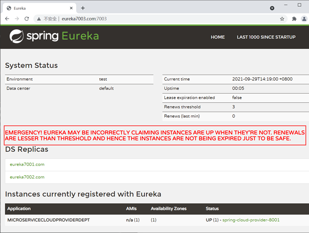

Eureka：Spring Cloud服务注册与发现组件（非常详细）
Eureka 一词来源于古希腊词汇，是“发现了”的意思。在软件领域，Eureka 是 Netflix 公司开发的一款开源的服务注册与发现组件。
Spring Cloud 将 Eureka 与 Netflix 中的其他开源服务组件（例如 Ribbon、Feign 以及 Hystrix 等）一起整合进 Spring Cloud Netflix 模块中，整合后的组件全称为 Spring Cloud Netflix Eureka。
Eureka 是 Spring Cloud Netflix 模块的子模块，它是 Spring Cloud 对 Netflix Eureka 的二次封装，主要负责 Spring Cloud 的服务注册与发现功能。
Spring Cloud 使用 Spring Boot 思想为 Eureka 增加了自动化配置，开发人员只需要引入相关依赖和注解，就能将 Spring Boot 构建的微服务轻松地与 Eureka 进行整合。
图1：Eureka 原理图
上图中共涉及到以下 3 个角色：
Eureka 实现服务注册与发现的流程如下：
服务注册中心（Eureka Server）所扮演的角色十分重要，它是服务提供者和服务消费者之间的桥梁。服务提供者只有将自己的服务注册到服务注册中心才可能被服务消费者调用，而服务消费者也只有通过服务注册中心获取可用服务列表后，才能调用所需的服务。
创建一个名为 spring-cloud-demo2 的 Maven 主工程 ，然后在该主工程的 pom.xml 中使用 dependencyManagement 来管理 Spring Cloud 的版本，内容如下。
2) 在 micro-service-cloud-eureka-7001 的类路径（/resouces 目录）下，添加一个配置文件 application.yml，配置内容如下。
3) 在 micro-service-cloud-eureka-7001 的主启动类上使用 @EnableEurekaServer 注解开启服务注册中心功能，接受其他服务的注册，代码如下。
4) 启动 micro-service-cloud-eureka-7001，使用浏览器访问 Eureka 服务注册中心主页，地址为“http://localhost:7001/”，结果如下图。

2) 在 micro-service-cloud-provider-dept-8001 类路径（/resources 目录）下，添加配置文件 application.yml，配置内容如下。
3) 在 net.biancheng.c.mapper 包下创建一个名为 DeptMapper 的接口，代码如下。
4) 在 resources/mybatis/mapper/ 目录下，创建一个名为 DeptMapper.xml 的 MyBatis 映射文件，配置内容如下。
5) 在 net.biancheng.c.service 包下创建一个名为 DeptService 的接口，代码如下。
6) 在 net.biancheng.c.service.impl 包下创建 DeptService 接口的实现类 DeptServiceImpl，代码如下。
7) 在 net.biancheng.c.controller 包下创建一个名为 DeptController 的 Controller 类，代码如下。
8) 在 micro-service-cloud-provider-dept-8001 的主启动类上，使用 @EnableEurekaClient 注解开启 Eureka 客户端功能，将服务注册到服务注册中心（Eureka Server），代码如下。
9) 依次启动 micro-service-cloud-eureka-7001 和 micro-service-cloud-provider-dept-8001，使用浏览器访再次问 Eureka 服务注册中心主页（http://localhost:7001/），如下图。

图3：服务提供者注册到服务注册中心
从图 3 可以看到， Instances currently registered with Eureka （注册到 Eureka Server 的实例）选项中已经包含了一条服务信息，即已经有服务注册到 Eureka Server 上了。
Instances currently registered with Eureka 选项中包含以下内容：
10) 在 MySQL 的 bianchengbang_jdbc 数据库中执行以下 SQL，准备测试数据。
11) 使用浏览器访问“http://localhost:8001/dept/list”，结果如下图。
图4：服务提供者提供服务访问数据库
我们知道，在 Eureka 实现服务注册与发现时一共涉及了 3 个角色：服务注册中心、服务提供者以及服务消费者，这三个角色分工明确，各司其职。但是其实在 Eureka 中，所有服务都既是服务消费者也是服务提供者，服务注册中心 Eureka Server 也不例外。
我们在搭建服务注册中心时，在 application.yml 中涉及了这样的配置：
这样设置的原因是 micro-service-cloud-eureka-7001 本身自己就是服务注册中心，服务注册中心是不能将自己注册到自己身上的，但服务注册中心是可以将自己作为服务向其他的服务注册中心注册自己的。
举个例子，有两个 Eureka Server 分别为 A 和 B，虽然 A 不能将自己注册到 A 上，B 也不能将自己注册到 B 上，但 A 是可以作为一个服务把自己注册到 B 上的，同理 B 也可以将自己注册到 A 上。
这样就可以形成一组互相注册的 Eureka Server 集群，当服务提供者发送注册请求到 Eureka Server 时，Eureka Server 会将请求转发给集群中所有与之相连的 Eureka Server 上，以实现 Eureka Server 之间的服务同步。
通过服务同步，服务消费者可以在集群中的任意一台 Eureka Server 上获取服务提供者提供的服务。这样，即使集群中的某个服务注册中心发生故障，服务消费者仍然可以从集群中的其他 Eureka Server 中获取服务信息并调用，而不会导致系统的整体瘫痪，这就是 Eureka Server 集群的高可用性。
1. 参照 micro-service-cloud-eureka-7001 的搭建过程，在主工程下另外再创建两个 Eureka Server：micro-service-cloud-eureka-7002 和 micro-service-cloud-eureka-7003，此时这 3 个 Eureka Server 无论是 Maven 依赖、代码还是配置都是一模一样的。
2. 修改 micro-service-cloud-eureka-7001、micro-service-cloud-eureka-7002、micro-service-cloud-eureka-7003 中 application.yml 的配置，具体配置如下 。
micro-service-cloud-eureka-7001 中 application.yml 的配置如下。
micro-service-cloud-eureka-7002 中 application.yml 的配置如下。
micro-service-cloud-eureka-7003 中 application.yml 的配置如下。
3. 由于我们是在本地搭建的 Eureka Server 集群，因此我们需要修改本地的 host 文件，Windows 操作系统的电脑在 C:/Windows/System/drivers/etc/hosts 中修改，Mac 系统的电脑则需要在 vim/etc/hosts 中修改，修改内容如下。
4. 修改 micro-service-cloud-provider-dept-8001（服务提供者）配置文件 application.yml 中 eureka.client.service-url.defaultZone 的取值，将服务注册到 Eureka Server 集群上，具体配置如下。
5. 启动 micro-service-cloud-eureka-7001，使用浏览器访问“http://eureka7001.com:7001/”，结果如下图。
从上图可以看到， 服务提供者（micro-service-cloud-provider-dept-8001）的服务已经注册到了 Eureka Server 7001，并且在 DS Replicas 选项中也显示了集群中的另外两个 Eureka Server：Eureka Server 7002 和 Eureka Server 7003。
6. 启动 micro-service-cloud-eureka-7002，使用浏览器访问“http://eureka7002.com:7002/”，结果如下图。
图6：Eureka Server 集群 -7002
从上图可以看到， 服务提供者（micro-service-cloud-provider-dept-8001）所提供的服务已经注册到了 Eureka Server 7002，并且在 DS Replicas 选项中也显示了集群中的另外两个 Eureka Server：Eureka Server 7001 和 Eureka Server 7003。
7. 启动 micro-service-cloud-eureka-7003，使用浏览器访问“http://eureka7003.com:7003/”，结果如下图。
图7：Eureka Server 集群 -7003
从上图可以看到， 服务提供者（micro-service-cloud-provider-dept-8001）所提供的服务已经注册到了 Eureka Server 7003，并且在 DS Replicas 选项中也显示了集群中的另外两个 Eureka Server：Eureka Server 7001 和 Eureka Server 7002。
自此我们就完成了 Eureka Server 集群的搭建和使用。
但在实际的分布式微服务系统中，健康的服务（Eureka Client）也有可能会由于网络故障（例如网络延迟、卡顿、拥挤等原因）而无法与 Eureka Server 正常通讯。若此时 Eureka Server 因为没有接收心跳而误将健康的服务从服务列表中移除，这显然是不合理的。而 Eureka 的自我保护机制就是来解决此问题的。
所谓 “Eureka 的自我保护机制”，其中心思想就是“好死不如赖活着”。如果 Eureka Server 在一段时间内没有接收到 Eureka Client 的心跳，那么 Eureka Server 就会开启自我保护模式，将所有的 Eureka Client 的注册信息保护起来，而不是直接从服务注册表中移除。一旦网络恢复，这些 Eureka Client 提供的服务还可以继续被服务消费者消费。
综上，Eureka 的自我保护机制是一种应对网络异常的安全保护措施。它的架构哲学是：宁可同时保留所有微服务（健康的服务和不健康的服务都会保留）也不盲目移除任何健康的服务。通过 Eureka 的自我保护机制，可以让 Eureka Server 集群更加的健壮、稳定。
1. 在 micro-service-cloud-eureka-7001 的配置文件 application.yml 中添加以下配置，关闭 Eureka 的自我保护机制。
2. 集群中的 micro-service-cloud-eureka-7002 和 micro-service-cloud-eureka-7002 不作任何修改，即它们的自我保护机制是开启的。
3. 重启 Eureka Server 集群以及 micro-service-cloud-provider-dept-8001，使用浏览器访问“http://eureka7001.com:7001/”，结果如下图。
图9：Eureka 关闭自我保护机制
从图 8 ，您可以看到以下内容：
4. 使用浏览器访问“http://eureka7002.com:7002/”，结果如下图。
图10：Eureka 自我保护机制
从图 9 可以看出，micro-service-cloud-provider-dept-8001 提供的服务也已经注册到当前 Eureka Server 中，但 DS Replicas 选项上方没有任何警告提示。
5. 关闭 micro-service-cloud-provider-dept-8001，等待几分钟，再次访问“http://eureka7001.com:7001/”，结果如下图。
图11：Eureka 关闭自我保护机制-2
在图 10 中 ，我们可以看到以下内容：
6. 再次访问“http://eureka7002.com:7002/”，结果如下图。
图12：Eureka 自我保护机制生效
在图 11 中 ，您可以看到以下内容：
Spring Cloud 将 Eureka 与 Netflix 中的其他开源服务组件（例如 Ribbon、Feign 以及 Hystrix 等）一起整合进 Spring Cloud Netflix 模块中，整合后的组件全称为 Spring Cloud Netflix Eureka。
Eureka 是 Spring Cloud Netflix 模块的子模块，它是 Spring Cloud 对 Netflix Eureka 的二次封装，主要负责 Spring Cloud 的服务注册与发现功能。
Spring Cloud 使用 Spring Boot 思想为 Eureka 增加了自动化配置，开发人员只需要引入相关依赖和注解，就能将 Spring Boot 构建的微服务轻松地与 Eureka 进行整合。
Eureka 两大组件
Eureka 采用 CS（Client/Server，客户端/服务器） 架构，它包括以下两大组件：- Eureka Server：Eureka 服务注册中心，主要用于提供服务注册功能。当微服务启动时，会将自己的服务注册到 Eureka Server。Eureka Server 维护了一个可用服务列表，存储了所有注册到 Eureka Server 的可用服务的信息，这些可用服务可以在 Eureka Server 的管理界面中直观看到。
- Eureka Client：Eureka 客户端，通常指的是微服务系统中各个微服务，主要用于和 Eureka Server 进行交互。在微服务应用启动后，Eureka Client 会向 Eureka Server 发送心跳（默认周期为 30 秒）。若 Eureka Server 在多个心跳周期内没有接收到某个 Eureka Client 的心跳，Eureka Server 将它从可用服务列表中移除（默认 90 秒）。
注：“心跳”指的是一段定时发送的自定义信息，让对方知道自己“存活”，以确保连接的有效性。大部分 CS 架构的应用程序都采用了心跳机制，服务端和客户端都可以发心跳。通常情况下是客户端向服务器端发送心跳包，服务端用于判断客户端是否在线。
Eureka 服务注册与发现
Eureka 实现服务注册与发现的原理，如下图所示。图1：Eureka 原理图
上图中共涉及到以下 3 个角色：
- 服务注册中心（Register Service）：它是一个 Eureka Server，用于提供服务注册和发现功能。
- 服务提供者（Provider Service）：它是一个 Eureka Client，用于提供服务。它将自己提供的服务注册到服务注册中心，以供服务消费者发现。
- 服务消费者（Consumer Service）：它是一个 Eureka Client，用于消费服务。它可以从服务注册中心获取服务列表，调用所需的服务。
Eureka 实现服务注册与发现的流程如下：
- 搭建一个 Eureka Server 作为服务注册中心；
- 服务提供者 Eureka Client 启动时，会把当前服务器的信息以服务名（spring.application.name）的方式注册到服务注册中心；
- 服务消费者 Eureka Client 启动时，也会向服务注册中心注册；
- 服务消费者还会获取一份可用服务列表，该列表中包含了所有注册到服务注册中心的服务信息（包括服务提供者和自身的信息）；
- 在获得了可用服务列表后，服务消费者通过 HTTP 或消息中间件远程调用服务提供者提供的服务。
服务注册中心（Eureka Server）所扮演的角色十分重要，它是服务提供者和服务消费者之间的桥梁。服务提供者只有将自己的服务注册到服务注册中心才可能被服务消费者调用，而服务消费者也只有通过服务注册中心获取可用服务列表后，才能调用所需的服务。
示例 1
下面，我们通过一个案例来展示下 Eureka 是如何实现服务注册与发现的。1. 创建主工程（Maven Project）
由于本案例中，会涉及到多个由 Spring Boot 创建的微服务，为了方便管理，这里我们采用 Maven 的多 Module 结构（即一个 Project 包含多个 Module）来构建工程。创建一个名为 spring-cloud-demo2 的 Maven 主工程 ，然后在该主工程的 pom.xml 中使用 dependencyManagement 来管理 Spring Cloud 的版本，内容如下。
<?xml version="1.0" encoding="UTF-8"?>
<project xmlns="http://maven.apache.org/POM/4.0.0"
xmlns:xsi="http://www.w3.org/2001/XMLSchema-instance"
xsi:schemaLocation="http://maven.apache.org/POM/4.0.0 http://maven.apache.org/xsd/maven-4.0.0.xsd">
<modelVersion>4.0.0</modelVersion>
<packaging>pom</packaging>
<modules>
<module>micro-service-cloud-api</module>
</modules>
<parent>
<groupId>org.springframework.boot</groupId>
<artifactId>spring-boot-starter-parent</artifactId>
<version>2.3.6.RELEASE</version>
<relativePath/> <!-- lookup parent from repository -->
</parent>
<groupId>net.biancheng.c</groupId>
<artifactId>spring-cloud-demo2</artifactId>
<version>0.0.1-SNAPSHOT</version>
<properties>
<maven.compiler.source>8</maven.compiler.source>
<maven.compiler.target>8</maven.compiler.target>
<project.build.sourceEncoding>UTF-8</project.build.sourceEncoding>
<maven.compiler.source>1.8</maven.compiler.source>
<maven.compiler.target>1.8</maven.compiler.target>
<junit.version>4.12</junit.version>
<log4j.version>1.2.17</log4j.version>
<lombok.version>1.16.18</lombok.version>
</properties>
<dependencyManagement>
<dependencies>
<!--在主工程中使用 dependencyManagement 声明 Spring Cloud 的版本，
这样工程内的 Module 中引入 Spring Cloud 组件依赖时，就不必在声明组件的版本信息
保证 Spring Cloud 各个组件一致性-->
<dependency>
<groupId>org.springframework.cloud</groupId>
<artifactId>spring-cloud-dependencies</artifactId>
<version>Hoxton.SR12</version>
<type>pom</type>
<scope>import</scope>
</dependency>
</dependencies>
</dependencyManagement>
<build>
<finalName>microservicecloud</finalName>
<resources>
<resource>
<directory>src/main/resources</directory>
<filtering>true</filtering>
</resource>
</resources>
<plugins>
<plugin>
<groupId>org.apache.maven.plugins</groupId>
<artifactId>maven-resources-plugin</artifactId>
<configuration>
<delimiters>
<delimit>$</delimit>
</delimiters>
</configuration>
</plugin>
</plugins>
</build>
</project>
2. 创建公共子模块（Maven Module）
1) 在主工程下，创建一个名为 micro-service-cloud-api 的 Maven Module：micro-service-cloud-api，其 pom.xml 配置如下。
<?xml version="1.0" encoding="UTF-8"?>
<project xmlns="http://maven.apache.org/POM/4.0.0"
xmlns:xsi="http://www.w3.org/2001/XMLSchema-instance"
xsi:schemaLocation="http://maven.apache.org/POM/4.0.0 http://maven.apache.org/xsd/maven-4.0.0.xsd">
<parent>
<artifactId>spring-cloud-demo2</artifactId>
<groupId>net.biancheng.c</groupId>
<version>0.0.1-SNAPSHOT</version>
</parent>
<modelVersion>4.0.0</modelVersion>
<artifactId>micro-service-cloud-api</artifactId>
<properties>
<maven.compiler.source>8</maven.compiler.source>
<maven.compiler.target>8</maven.compiler.target>
</properties>
<dependencies>
<dependency>
<groupId>org.projectlombok</groupId>
<artifactId>lombok</artifactId>
</dependency>
</dependencies>
</project>
2) 在 micro-service-cloud-api 的 net.biancheng.c.entity 包下，创建一个名为 Dept 的实体类，代码如下。注：micro-service-cloud-api 是整个工程的公共子模块，它包含了一些其他子模块共有的内容，例如实体类、公共工具类、公共依赖项等。当其他子模块需要使用公共子模块中的内容时，只需要在其 pom.xml 引入公共子模块的依赖即可。
package net.biancheng.c.entity;
import lombok.Data;
import lombok.NoArgsConstructor;
import lombok.experimental.Accessors;
import java.io.Serializable;
@NoArgsConstructor //无参构造函数
@Data // 提供类的get、set、equals、hashCode、canEqual、toString 方法
@Accessors(chain = true)
public class Dept implements Serializable {
private Integer deptNo;
private String deptName;
private String dbSource;
}
3. 搭建服务注册中心
1) 在主工程下创建一个名为 micro-service-cloud-eureka-7001 的 Spring Boot Module 作为服务注册中心，并在其 pom.xml 中引入以下依赖。
<?xml version="1.0" encoding="UTF-8"?>
<project xmlns="http://maven.apache.org/POM/4.0.0" xmlns:xsi="http://www.w3.org/2001/XMLSchema-instance"
xsi:schemaLocation="http://maven.apache.org/POM/4.0.0 https://maven.apache.org/xsd/maven-4.0.0.xsd">
<modelVersion>4.0.0</modelVersion>
<!--继承主工程的 POM-->
<parent>
<artifactId>spring-cloud-demo2</artifactId>
<groupId>net.biancheng.c</groupId>
<version>0.0.1-SNAPSHOT</version>
</parent>
<groupId>net.biancheng.c</groupId>
<artifactId>micro-service-cloud-eureka-7001</artifactId>
<version>0.0.1-SNAPSHOT</version>
<name>micro-service-cloud-eureka-7001</name>
<description>Demo project for Spring Boot</description>
<properties>
<java.version>1.8</java.version>
</properties>
<dependencies>
<dependency>
<groupId>org.springframework.boot</groupId>
<artifactId>spring-boot-starter-web</artifactId>
</dependency>
<!--为服务注册中心引入 Eureka Server 的依赖-->
<dependency>
<groupId>org.springframework.cloud</groupId>
<artifactId>spring-cloud-starter-netflix-eureka-server</artifactId>
</dependency>
<!--devtools 和 lombok 均为开发辅助模块，根据需求适当选择-->
<dependency>
<groupId>org.springframework.boot</groupId>
<artifactId>spring-boot-devtools</artifactId>
<scope>runtime</scope>
<optional>true</optional>
</dependency>
<dependency>
<groupId>org.projectlombok</groupId>
<artifactId>lombok</artifactId>
<optional>true</optional>
</dependency>
<dependency>
<groupId>org.springframework.boot</groupId>
<artifactId>spring-boot-starter-test</artifactId>
<scope>test</scope>
</dependency>
</dependencies>
<build>
<plugins>
<plugin>
<groupId>org.springframework.boot</groupId>
<artifactId>spring-boot-maven-plugin</artifactId>
<configuration>
<excludes>
<exclude>
<groupId>org.projectlombok</groupId>
<artifactId>lombok</artifactId>
</exclude>
</excludes>
</configuration>
</plugin>
</plugins>
</build>
</project>
2) 在 micro-service-cloud-eureka-7001 的类路径（/resouces 目录）下，添加一个配置文件 application.yml，配置内容如下。
server:
port: 7001 #该 Module 的端口号
eureka:
instance:
hostname: localhost #eureka服务端的实例名称，
client:
register-with-eureka: false #false表示不向注册中心注册自己。
fetch-registry: false #false表示自己端就是注册中心，我的职责就是维护服务实例，并不需要去检索服务
service-url:
defaultZone: http://${eureka.instance.hostname}:${server.port}/eureka/ #单机版服务注册中心
3) 在 micro-service-cloud-eureka-7001 的主启动类上使用 @EnableEurekaServer 注解开启服务注册中心功能，接受其他服务的注册，代码如下。
package net.biancheng.c;
import org.springframework.boot.SpringApplication;
import org.springframework.boot.autoconfigure.SpringBootApplication;
import org.springframework.cloud.netflix.eureka.server.EnableEurekaServer;
@SpringBootApplication
@EnableEurekaServer //开启 Eureka server,接受其他微服务的注册
public class MicroServiceCloudEureka7001Application {
public static void main(String[] args) {
SpringApplication.run(MicroServiceCloudEureka7001Application.class, args);
}
}
4) 启动 micro-service-cloud-eureka-7001，使用浏览器访问 Eureka 服务注册中心主页，地址为“http://localhost:7001/”，结果如下图。
图2：Eureka 7001 服务注册中心
4. 搭建服务提供者
1) 在主工程下创建一个名为 micro-service-cloud-provider-dept-8001 的 Spring Boot Module，并在其 pom.xml 中引入以下依赖。
<?xml version="1.0" encoding="UTF-8"?>
<project xmlns="http://maven.apache.org/POM/4.0.0" xmlns:xsi="http://www.w3.org/2001/XMLSchema-instance"
xsi:schemaLocation="http://maven.apache.org/POM/4.0.0 https://maven.apache.org/xsd/maven-4.0.0.xsd">
<modelVersion>4.0.0</modelVersion>
<!--引入父工程pom-->
<parent>
<artifactId>spring-cloud-demo2</artifactId>
<groupId>net.biancheng.c</groupId>
<version>0.0.1-SNAPSHOT</version>
</parent>
<groupId>net.biancheng.c</groupId>
<artifactId>micro-service-cloud-provider-dept-8001</artifactId>
<version>0.0.1-SNAPSHOT</version>
<name>micro-service-cloud-provider-dept-8001</name>
<description>Demo project for Spring Boot</description>
<properties>
<java.version>1.8</java.version>
</properties>
<dependencies>
<!--Spring Boot Web-->
<dependency>
<groupId>org.springframework.boot</groupId>
<artifactId>spring-boot-starter-web</artifactId>
</dependency>
<!--devtools 开发工具-->
<dependency>
<groupId>org.springframework.boot</groupId>
<artifactId>spring-boot-devtools</artifactId>
<scope>runtime</scope>
<optional>true</optional>
</dependency>
<!--Spring Boot 测试-->
<dependency>
<groupId>org.springframework.boot</groupId>
<artifactId>spring-boot-starter-test</artifactId>
<scope>test</scope>
</dependency>
<!--引入公共子模块-->
<dependency>
<groupId>net.biancheng.c</groupId>
<artifactId>micro-service-cloud-api</artifactId>
<version>${project.version}</version>
</dependency>
<!--junit 测试-->
<dependency>
<groupId>junit</groupId>
<artifactId>junit</artifactId>
<version>4.12</version>
</dependency>
<!--mysql 驱动-->
<dependency>
<groupId>mysql</groupId>
<artifactId>mysql-connector-java</artifactId>
<version>5.1.49</version>
</dependency>
<!--logback 日志-->
<dependency>
<groupId>ch.qos.logback</groupId>
<artifactId>logback-core</artifactId>
</dependency>
<!--整合 mybatis -->
<dependency>
<groupId>org.mybatis.spring.boot</groupId>
<artifactId>mybatis-spring-boot-starter</artifactId>
<version>2.2.0</version>
</dependency>
<!-- 修改后立即生效，热部署 -->
<dependency>
<groupId>org.springframework</groupId>
<artifactId>springloaded</artifactId>
<version>1.2.8.RELEASE</version>
</dependency>
<!--引入 Eureka Client 的依赖，将服务注册到 Eureka Server-->
<dependency>
<groupId>org.springframework.cloud</groupId>
<artifactId>spring-cloud-starter-netflix-eureka-client</artifactId>
</dependency>
<!-- Spring Boot 监控模块-->
<dependency>
<groupId>org.springframework.boot</groupId>
<artifactId>spring-boot-starter-actuator</artifactId>
</dependency>
</dependencies>
<build>
<plugins>
<!--mybatis自动生成代码插件-->
<plugin>
<groupId>org.mybatis.generator</groupId>
<artifactId>mybatis-generator-maven-plugin</artifactId>
<version>1.4.0</version>
<configuration>
<configurationFile>src/main/resources/mybatis-generator/generatorConfig.xml</configurationFile>
<verbose>true</verbose>
<!-- 是否覆盖，true表示会替换生成的JAVA文件，false则不覆盖 -->
<overwrite>true</overwrite>
</configuration>
<dependencies>
<!--mysql驱动包-->
<dependency>
<groupId>mysql</groupId>
<artifactId>mysql-connector-java</artifactId>
<version>5.1.49</version>
</dependency>
<dependency>
<groupId>org.mybatis.generator</groupId>
<artifactId>mybatis-generator-core</artifactId>
<version>1.4.0</version>
</dependency>
</dependencies>
</plugin>
<plugin>
<groupId>org.springframework.boot</groupId>
<artifactId>spring-boot-maven-plugin</artifactId>
</plugin>
</plugins>
</build>
</project>
2) 在 micro-service-cloud-provider-dept-8001 类路径（/resources 目录）下，添加配置文件 application.yml，配置内容如下。
server:
port: 8001 #服务端口号
spring:
application:
name: microServiceCloudProviderDept #微服务名称，对外暴漏的微服务名称，十分重要
################################################## JDBC 通用配置 ##########################################
datasource:
username: root #数据库登陆用户名
password: root #数据库登陆密码
url: jdbc:mysql://127.0.0.1:3306/bianchengbang_jdbc #数据库url
driver-class-name: com.mysql.jdbc.Driver #数据库驱动
############################### 不检查 spring.config.import=configserver:##################
# cloud:
# config:
# enabled: false
###################################### MyBatis 配置 ######################################
mybatis:
# 指定 mapper.xml 的位置
mapper-locations: classpath:mybatis/mapper/*.xml
#扫描实体类的位置,在此处指明扫描实体类的包，在 mapper.xml 中就可以不写实体类的全路径名
type-aliases-package: net.biancheng.c.entity
configuration:
#默认开启驼峰命名法，可以不用设置该属性
map-underscore-to-camel-case: true
########################################### Spring cloud 自定义服务名称和 ip 地址###############################################
eureka:
client: #将客户端注册到 eureka 服务列表内
service-url:
defaultZone: http://eureka7001.com:7001/eureka #这个地址是 7001注册中心在 application.yml 中暴露出来额注册地址 （单机版）
instance:
instance-id: spring-cloud-provider-8001 #自定义服务名称信息
prefer-ip-address: true #显示访问路径的 ip 地址
########################################## spring cloud 使用 Spring Boot actuator 监控完善信息###################################
# Spring Boot 2.50对 actuator 监控屏蔽了大多数的节点，只暴露了 heath 节点，本段配置（*）就是为了开启所有的节点
management:
endpoints:
web:
exposure:
include: "*" # * 在yaml 文件属于关键字，所以需要加引号
info:
app.name: micro-service-cloud-provider-dept
company.name: c.biancheng.net
build.aetifactId: @project.artifactId@
build.version: @project.version@
3) 在 net.biancheng.c.mapper 包下创建一个名为 DeptMapper 的接口，代码如下。
package net.biancheng.c.mapper;
import net.biancheng.c.entity.Dept;
import org.apache.ibatis.annotations.Mapper;
import java.util.List;
@Mapper
public interface DeptMapper {
//根据主键获取数据
Dept selectByPrimaryKey(Integer deptNo);
//获取表中的全部数据
List<Dept> GetAll();
}
4) 在 resources/mybatis/mapper/ 目录下，创建一个名为 DeptMapper.xml 的 MyBatis 映射文件，配置内容如下。
<?xml version="1.0" encoding="UTF-8"?>
<!DOCTYPE mapper PUBLIC "-//mybatis.org//DTD Mapper 3.0//EN" "http://mybatis.org/dtd/mybatis-3-mapper.dtd">
<mapper namespace="net.biancheng.c.mapper.DeptMapper">
<resultMap id="BaseResultMap" type="net.biancheng.c.entity.Dept">
<id column="dept_no" jdbcType="INTEGER" property="deptNo"/>
<result column="dept_name" jdbcType="VARCHAR" property="deptName"/>
<result column="db_source" jdbcType="VARCHAR" property="dbSource"/>
</resultMap>
<sql id="Base_Column_List">
dept_no
, dept_name, db_source
</sql>
<select id="selectByPrimaryKey" parameterType="java.lang.Integer" resultMap="BaseResultMap">
select
<include refid="Base_Column_List"/>
from dept
where dept_no = #{deptNo,jdbcType=INTEGER}
</select>
<select id="GetAll" resultType="net.biancheng.c.entity.Dept">
select *
from dept;
</select>
</mapper>
5) 在 net.biancheng.c.service 包下创建一个名为 DeptService 的接口，代码如下。
package net.biancheng.c.service;
import net.biancheng.c.entity.Dept;
import java.util.List;
public interface DeptService {
Dept get(Integer deptNo);
List<Dept> selectAll();
}
6) 在 net.biancheng.c.service.impl 包下创建 DeptService 接口的实现类 DeptServiceImpl，代码如下。
package net.biancheng.c.service.impl;
import net.biancheng.c.entity.Dept;
import net.biancheng.c.mapper.DeptMapper;
import net.biancheng.c.service.DeptService;
import org.springframework.beans.factory.annotation.Autowired;
import org.springframework.stereotype.Service;
import java.util.List;
@Service("deptService")
public class DeptServiceImpl implements DeptService {
@Autowired
private DeptMapper deptMapper;
@Override
public Dept get(Integer deptNo) {
return deptMapper.selectByPrimaryKey(deptNo);
}
@Override
public List<Dept> selectAll() {
return deptMapper.GetAll();
}
}
7) 在 net.biancheng.c.controller 包下创建一个名为 DeptController 的 Controller 类，代码如下。
package net.biancheng.c.controller;
import lombok.extern.slf4j.Slf4j;
import net.biancheng.c.entity.Dept;
import net.biancheng.c.service.DeptService;
import org.springframework.beans.factory.annotation.Autowired;
import org.springframework.beans.factory.annotation.Value;
import org.springframework.web.bind.annotation.*;
import java.util.List;
/**
* 服务提供者的控制层
* author:c语言中文网 c.biancheng.net
*/
@RestController
@Slf4j
public class DeptController {
@Autowired
private DeptService deptService;
@Value("${server.port}")
private String serverPort;
@RequestMapping(value = "/dept/get/{id}", method = RequestMethod.GET)
public Dept get(@PathVariable("id") int id) {
return deptService.get(id);
}
@RequestMapping(value = "/dept/list", method = RequestMethod.GET)
public List<Dept> list() {
return deptService.selectAll();
}
}
8) 在 micro-service-cloud-provider-dept-8001 的主启动类上，使用 @EnableEurekaClient 注解开启 Eureka 客户端功能，将服务注册到服务注册中心（Eureka Server），代码如下。
package net.biancheng.c;
import org.springframework.boot.SpringApplication;
import org.springframework.boot.autoconfigure.SpringBootApplication;
import org.springframework.cloud.netflix.eureka.EnableEurekaClient;
@SpringBootApplication
@EnableEurekaClient // Spring cloud Eureka 客户端，自动将本服务注册到 Eureka Server 注册中心中
public class MicroServiceCloudProviderDept8001Application {
public static void main(String[] args) {
SpringApplication.run(MicroServiceCloudProviderDept8001Application.class, args);
}
}
9) 依次启动 micro-service-cloud-eureka-7001 和 micro-service-cloud-provider-dept-8001，使用浏览器访再次问 Eureka 服务注册中心主页（http://localhost:7001/），如下图。
图3：服务提供者注册到服务注册中心
从图 3 可以看到， Instances currently registered with Eureka （注册到 Eureka Server 的实例）选项中已经包含了一条服务信息，即已经有服务注册到 Eureka Server 上了。
Instances currently registered with Eureka 选项中包含以下内容：
- Application：MICROSERVICECLOUDPROVIDERDEPT，该取值为 micro-service-cloud-provider-dept-8001 配置文件 application.yml 中 spring.application.name 的取值。
- Status： UP (1) - spring-cloud-provider-8001，UP 表示服务在线， (1) 表示有集群中服务的数量，spring-cloud-provider-8001 则是 micro-service-cloud-provider-dept-8001 配置文件 application.yml 中 eureka.instance.instance-id 的取值。
10) 在 MySQL 的 bianchengbang_jdbc 数据库中执行以下 SQL，准备测试数据。
DROP TABLE IF EXISTS `dept`;
CREATE TABLE `dept` (
`dept_no` int NOT NULL AUTO_INCREMENT,
`dept_name` varchar(255) DEFAULT NULL,
`db_source` varchar(255) DEFAULT NULL,
PRIMARY KEY (`dept_no`)
) ENGINE=InnoDB AUTO_INCREMENT=6 DEFAULT CHARSET=utf8mb4 COLLATE=utf8mb4_0900_ai_ci;
INSERT INTO `dept` VALUES ('1', '开发部', 'bianchengbang_jdbc');
INSERT INTO `dept` VALUES ('2', '人事部', 'bianchengbang_jdbc');
INSERT INTO `dept` VALUES ('3', '财务部', 'bianchengbang_jdbc');
INSERT INTO `dept` VALUES ('4', '市场部', 'bianchengbang_jdbc');
INSERT INTO `dept` VALUES ('5', '运维部', 'bianchengbang_jdbc');
11) 使用浏览器访问“http://localhost:8001/dept/list”，结果如下图。
图4：服务提供者提供服务访问数据库
Eureka Server 集群
在微服务架构中，一个系统往往由十几甚至几十个服务组成，若将这些服务全部注册到同一个 Eureka Server 中，就极有可能导致 Eureka Server 因不堪重负而崩溃，最终导致整个系统瘫痪。解决这个问题最直接的办法就是部署 Eureka Server 集群。我们知道，在 Eureka 实现服务注册与发现时一共涉及了 3 个角色：服务注册中心、服务提供者以及服务消费者，这三个角色分工明确，各司其职。但是其实在 Eureka 中，所有服务都既是服务消费者也是服务提供者，服务注册中心 Eureka Server 也不例外。
我们在搭建服务注册中心时，在 application.yml 中涉及了这样的配置：
eureka:
client:
register-with-eureka: false #false 表示不向注册中心注册自己。
fetch-registry: false #false表示自己端就是注册中心，职责就是维护服务实例，并不需要去检索服务
这样设置的原因是 micro-service-cloud-eureka-7001 本身自己就是服务注册中心，服务注册中心是不能将自己注册到自己身上的，但服务注册中心是可以将自己作为服务向其他的服务注册中心注册自己的。
举个例子，有两个 Eureka Server 分别为 A 和 B，虽然 A 不能将自己注册到 A 上，B 也不能将自己注册到 B 上，但 A 是可以作为一个服务把自己注册到 B 上的，同理 B 也可以将自己注册到 A 上。
这样就可以形成一组互相注册的 Eureka Server 集群，当服务提供者发送注册请求到 Eureka Server 时，Eureka Server 会将请求转发给集群中所有与之相连的 Eureka Server 上，以实现 Eureka Server 之间的服务同步。
通过服务同步，服务消费者可以在集群中的任意一台 Eureka Server 上获取服务提供者提供的服务。这样，即使集群中的某个服务注册中心发生故障，服务消费者仍然可以从集群中的其他 Eureka Server 中获取服务信息并调用，而不会导致系统的整体瘫痪，这就是 Eureka Server 集群的高可用性。
示例 2
下面我们在示例 1 的基础上进行扩展，构建一个拥有 3 个 Eureka Server 实例的集群。1. 参照 micro-service-cloud-eureka-7001 的搭建过程，在主工程下另外再创建两个 Eureka Server：micro-service-cloud-eureka-7002 和 micro-service-cloud-eureka-7003，此时这 3 个 Eureka Server 无论是 Maven 依赖、代码还是配置都是一模一样的。
2. 修改 micro-service-cloud-eureka-7001、micro-service-cloud-eureka-7002、micro-service-cloud-eureka-7003 中 application.yml 的配置，具体配置如下 。
micro-service-cloud-eureka-7001 中 application.yml 的配置如下。
server:
port: 7001 #端口号
eureka:
instance:
hostname: eureka7001.com #eureka服务端的实例名称
client:
register-with-eureka: false #false 表示不向注册中心注册自己。
fetch-registry: false #false 表示自己端就是注册中心，我的职责就是维护服务实例，并不需要去检索服务
service-url:
#defaultZone: http://${eureka.instance.hostname}:${server.port}/eureka/ #单机版
defaultZone: http://eureka7002.com:7002/eureka/,http://eureka7003.com:7003/eureka/ #集群版 将当前的 Eureka Server 注册到 7003 和 7003 上，形成一组互相注册的 Eureka Server 集群
micro-service-cloud-eureka-7002 中 application.yml 的配置如下。
server:
port: 7002 #端口号
eureka:
instance:
hostname: eureka7002.com #Eureka Server 实例名称
client:
register-with-eureka: false #false 表示不向注册中心注册自己。
fetch-registry: false #false 表示自己端就是注册中心，我的职责就是维护服务实例，并不需要去检索服务
service-url:
defaultZone: http://eureka7001.com:7001/eureka/,http://eureka7003.com:7003/eureka/ #将这个 Eureka Server 注册到 7001 和 7003 上
micro-service-cloud-eureka-7003 中 application.yml 的配置如下。
server:
port: 7003 #端口号
eureka:
instance:
hostname: eureka7003.com #Eureka Server 实例名称
client:
register-with-eureka: false #false 表示不向注册中心注册自己。
fetch-registry: false #false 表示自己端就是注册中心，我的职责就是维护服务实例，并不需要去检索服务
service-url:
defaultZone: http://eureka7001.com:7001/eureka/,http://eureka7002.com:7002/eureka/ #将这个 Eureka Server 注册到 7001 和 7002 上
3. 由于我们是在本地搭建的 Eureka Server 集群，因此我们需要修改本地的 host 文件，Windows 操作系统的电脑在 C:/Windows/System/drivers/etc/hosts 中修改，Mac 系统的电脑则需要在 vim/etc/hosts 中修改，修改内容如下。
#Spring Cloud eureka 集群 127.0.0.1 eureka7001.com 127.0.0.1 eureka7002.com 127.0.0.1 eureka7003.com
4. 修改 micro-service-cloud-provider-dept-8001（服务提供者）配置文件 application.yml 中 eureka.client.service-url.defaultZone 的取值，将服务注册到 Eureka Server 集群上，具体配置如下。
eureka:
client: #将客户端注册到 eureka 服务列表内
service-url:
#defaultZone: http://eureka7001.com:7001/eureka #这个地址是 7001 注册中心在 application.yml 中暴露出来的注册地址 （单机版）
defaultZone: http://eureka7001.com:7001/eureka/,http://eureka7002.com:7002/eureka/,http://eureka7003.com:7003/eureka/ #将服务注册到 Eureka Server 集群
5. 启动 micro-service-cloud-eureka-7001，使用浏览器访问“http://eureka7001.com:7001/”，结果如下图。
图5：Eureka Server 集群 -7001
从上图可以看到， 服务提供者（micro-service-cloud-provider-dept-8001）的服务已经注册到了 Eureka Server 7001，并且在 DS Replicas 选项中也显示了集群中的另外两个 Eureka Server：Eureka Server 7002 和 Eureka Server 7003。
6. 启动 micro-service-cloud-eureka-7002，使用浏览器访问“http://eureka7002.com:7002/”，结果如下图。
图6：Eureka Server 集群 -7002
从上图可以看到， 服务提供者（micro-service-cloud-provider-dept-8001）所提供的服务已经注册到了 Eureka Server 7002，并且在 DS Replicas 选项中也显示了集群中的另外两个 Eureka Server：Eureka Server 7001 和 Eureka Server 7003。
7. 启动 micro-service-cloud-eureka-7003，使用浏览器访问“http://eureka7003.com:7003/”，结果如下图。
图7：Eureka Server 集群 -7003
从上图可以看到， 服务提供者（micro-service-cloud-provider-dept-8001）所提供的服务已经注册到了 Eureka Server 7003，并且在 DS Replicas 选项中也显示了集群中的另外两个 Eureka Server：Eureka Server 7001 和 Eureka Server 7002。
自此我们就完成了 Eureka Server 集群的搭建和使用。
Eureka 自我保护机制
当我们在本地调试基于 Eureka 的程序时，Eureka 服务注册中心很有可能会出现如下图所示的红色警告。

图8：Eureka 自我保护提示
实际上，这个警告是触发了 Eureka 的自我保护机制而出现的。默认情况下，如果 Eureka Server 在一段时间内（默认为 90 秒）没有接收到某个服务提供者（Eureka Client）的心跳，就会将这个服务提供者提供的服务从服务注册表中移除。 这样服务消费者就再也无法从服务注册中心中获取到这个服务了，更无法调用该服务。图8：Eureka 自我保护提示
但在实际的分布式微服务系统中，健康的服务（Eureka Client）也有可能会由于网络故障（例如网络延迟、卡顿、拥挤等原因）而无法与 Eureka Server 正常通讯。若此时 Eureka Server 因为没有接收心跳而误将健康的服务从服务列表中移除，这显然是不合理的。而 Eureka 的自我保护机制就是来解决此问题的。
所谓 “Eureka 的自我保护机制”，其中心思想就是“好死不如赖活着”。如果 Eureka Server 在一段时间内没有接收到 Eureka Client 的心跳，那么 Eureka Server 就会开启自我保护模式，将所有的 Eureka Client 的注册信息保护起来，而不是直接从服务注册表中移除。一旦网络恢复，这些 Eureka Client 提供的服务还可以继续被服务消费者消费。
综上，Eureka 的自我保护机制是一种应对网络异常的安全保护措施。它的架构哲学是：宁可同时保留所有微服务（健康的服务和不健康的服务都会保留）也不盲目移除任何健康的服务。通过 Eureka 的自我保护机制，可以让 Eureka Server 集群更加的健壮、稳定。
默认情况下，Eureka 的自我保护机制是开启的，如果想要关闭，则需要在配置文件中添加以下配置。Eureka 的自我保护机制也存在弊端。如果在 Eureka 自我保护机制触发期间，服务提供者提供的服务出现问题，那么服务消费者就很容易获取到已经不存在的服务进而出现调用失败的情况，此时，我们可以通过客户端的容错机制来解决此问题，详情请参考 Spring Cloud Netflix Ribbon 和 Spring Cloud Netflix Hystrix。
eureka:
server:
enable-self-preservation: false # false 关闭 Eureka 的自我保护机制，默认是开启,一般不建议大家修改
示例 3
下面我们通过一个实例，来验证下 Eureka 的自我保护机制。1. 在 micro-service-cloud-eureka-7001 的配置文件 application.yml 中添加以下配置，关闭 Eureka 的自我保护机制。
eureka:
server:
enable-self-preservation: false # false 关闭 Eureka 的自我保护机制，默认是开启,一般不建议大家修改
2. 集群中的 micro-service-cloud-eureka-7002 和 micro-service-cloud-eureka-7002 不作任何修改，即它们的自我保护机制是开启的。
3. 重启 Eureka Server 集群以及 micro-service-cloud-provider-dept-8001，使用浏览器访问“http://eureka7001.com:7001/”，结果如下图。
图9：Eureka 关闭自我保护机制
从图 8 ，您可以看到以下内容：
- 在 DS Replicas 选项上面出现了红色警告信息“THE SELF PRESERVATION MODE IS TURNED OFF. THIS MAY NOT PROTECT INSTANCE EXPIRY IN CASE OF NETWORK/OTHER PROBLEMS.”，出现该信息则表示“ Eureka 自我保护模式已关闭。”
- micro-service-cloud-provider-dept-8001 提供的服务已经注册到该 Eureka Server 中。
4. 使用浏览器访问“http://eureka7002.com:7002/”，结果如下图。
图10：Eureka 自我保护机制
从图 9 可以看出，micro-service-cloud-provider-dept-8001 提供的服务也已经注册到当前 Eureka Server 中，但 DS Replicas 选项上方没有任何警告提示。
5. 关闭 micro-service-cloud-provider-dept-8001，等待几分钟，再次访问“http://eureka7001.com:7001/”，结果如下图。
图11：Eureka 关闭自我保护机制-2
在图 10 中 ，我们可以看到以下内容：
- 在 DS Replicas 选项上面出现了红色警告信息“RENEWALS ARE LESSER THAN THE THRESHOLD. THE SELF PRESERVATION MODE IS TURNED OFF. THIS MAY NOT PROTECT INSTANCE EXPIRY IN CASE OF NETWORK/OTHER PROBLEMS.”，出现该信息则表示 Eureka 的自我保护模式已关闭，且已经有服务被移除。
- micro-service-cloud-provider-dept-8001 提供的服务已经从服务列表中移除。
6. 再次访问“http://eureka7002.com:7002/”，结果如下图。
图12：Eureka 自我保护机制生效
在图 11 中 ，您可以看到以下内容：
- 在 DS Replicas 选项上面出现了红色警告信息“EMERGENCY! EUREKA MAY BE INCORRECTLY CLAIMING INSTANCES ARE UP WHEN THEY'RE NOT. RENEWALS ARE LESSER THAN THRESHOLD AND HENCE THE INSTANCES ARE NOT BEING EXPIRED JUST TO BE SAFE.”，出现该信息表明 Eureka 的自我保护机制处于开启状态，且已经被触发。
- micro-service-cloud-provider-dept-8001 的服务信息依然保存 Eureka Server 服务注册表中，并未被移除。
关注公众号「站长严长生」，在手机上阅读所有教程，随时随地都能学习。内含一款搜索神器，免费下载全网书籍和视频。

微信扫码关注公众号